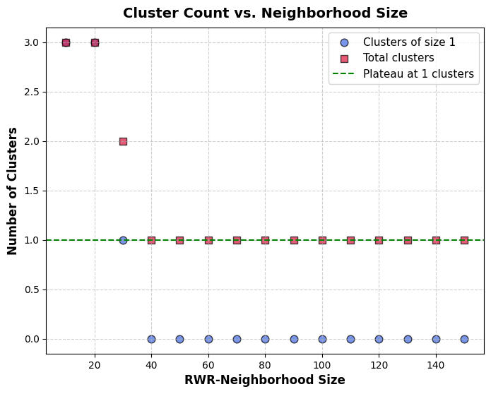
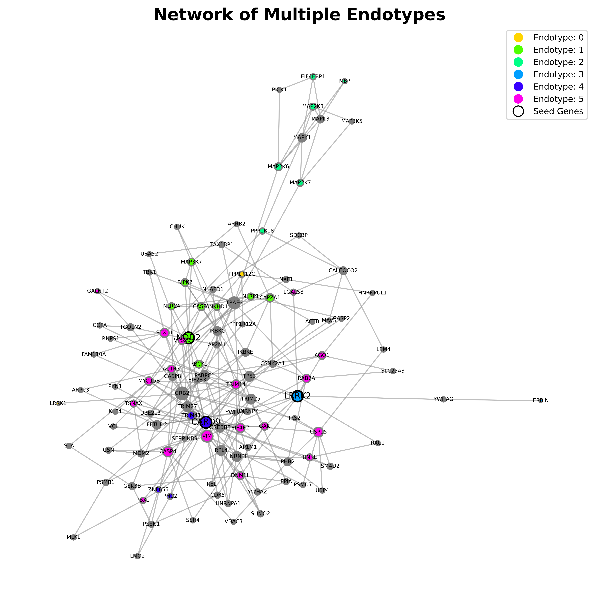

EndotypY documentation
Installation
You can install EndotypY directly from GitHub:
pip install git+https://github.com/menchelab/EndotypY
Quick Start
Here is a simple example to get you started with endotyping:
import EndotypY
from EndotypY.endotyper import Endotyper
# Initialize the endotyper
endo = Endotyper()
# Read in a graph from a file
path_network = 'your_network.tsv'
endo.import_network(path_network)
#read in a seed set from a file
path_seeds = 'your_seeds.txt'
endo.import_seeds(path_seeds)
#prepare RWR
# r is the restart probability, which controls the balance between exploring the network
#and returning to the seed nodes.
endo.prepare_rwr(r=0.8)
#explore the seed clusters
#k = maximum size of neighbohoods to explore
endo.explore_seed_clusters(scaling=True, k=150)
{kind=link}

#extract a connected disease module based on seed cluster
#if seed_cluster_id is None, all seeds will be used
endo.extract_disease_module(seed_cluster_id = 1, scaling=True, k=40)
#explore the local neighborhood around all seeds
#neighbor_percentage defines the percentage of neighbors
#to explore around each seed, based on RWR scores
endo.define_local_neighborhood(scaling=True, neighbor_percentage=1)
#annotate the local neighborhoods with gene set enrichment
endo.annotate_local_neighborhood(enrichr_lib='GO_Biological_Process_2023',
organism='Human',
sig_threshold=0.05,
force_download=False)
#find endotypes
endo.define_kl_endotypes(distance_metric='jaccard',linkage_method='complete',alpha=0.05)
#plot endotypes assignment on the network
endo.plot_endotypes(node_size='degree', path_length=8)
{kind=link}

#other visualization options
#metagraph of endotypes
endo.plot_endotypes_metagraph(filter_size_endotypes=True, node_size=15)
#grid with endotype-specific local neighborhoods and endotype enrichment results
endo.plot_endotype_grid(node_size='degree',
path_length=3,enrichr_lib='Reactome_Pathways_2024',top_terms=10)